Crie um programa que exiba: Olá, Mundo! Bem-vindo à programação em C.
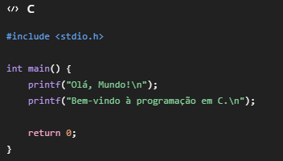
#include
printf() exibe mensagens na tela.
\n faz a quebra de linha.
return 0; indica que o programa terminou corretamente.
Solicite o nome e a idade do usuário e exiba uma mensagem de apresentação.
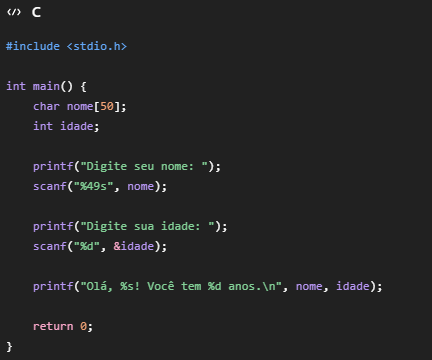
char nome[50] cria um espaço para armazenar o nome.
%s lê uma palavra.
%d lê um número inteiro.
&idade informa o endereço da variável onde o valor será armazenado.p>
Leia dois números inteiros e exiba a soma.
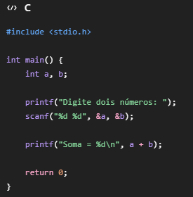
São lidos dois números inteiros.
O operador + realiza a soma.
Leia dois números e mostre soma, subtração, multiplicação e divisão inteira.
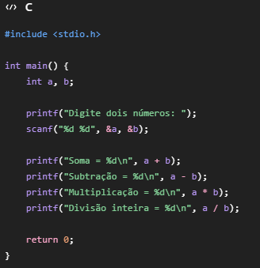
Operadores usados:
+ → soma
- → subtração
* → multiplicação
/ → divisão inteira (como as variáveis são int)
Leia um número inteiro e mostre seu antecessor e sucessor.
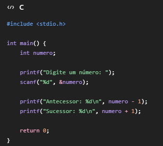
O antecessor é numero - 1.
O sucessor é numero + 1.
Leia duas notas (float) e calcule a média.
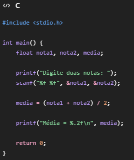
float armazena números com casas decimais.
%.2f mostra apenas duas casas decimais.
Leia uma temperatura em Celsius e converta usando F=(C*9/5)+32.
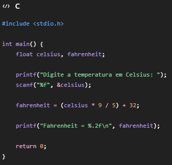
Foi utilizada a fórmula:
F = (C × 9/5) + 32
Leia base e altura e calcule a área.
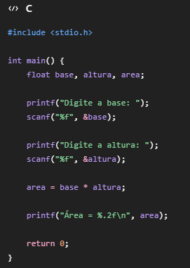
A fórmula da área é:
Área = Base × Altura
Leia valor da hora e quantidade de horas trabalhadas. Calcule o salário.
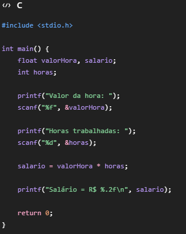
O cálculo é:
Salário = Valor da hora × Horas trabalhadas
Leia dois números e mostre soma, subtração, multiplicação, divisão e resto da divisão.
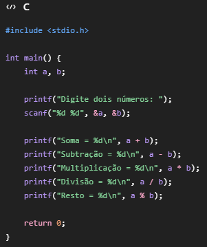
Além das quatro operações, foi usado: %
Esse operador calcula o resto da divisão.
Exemplo:
10 % 3 = 1
Solicite nome, idade, nota 1 e nota 2. Exiba uma ficha do aluno contendo os dados e a média final.
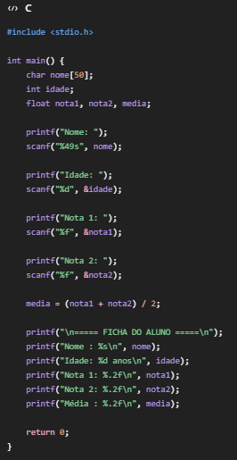
O programa:
Lê o nome do aluno.
Lê a idade.
Lê duas notas.
Calcula a média.
Exibe uma ficha organizada com todas as informações.